The student dashboard is the main ‘home’ area that you use to navigate Codio. This is what it looks like:
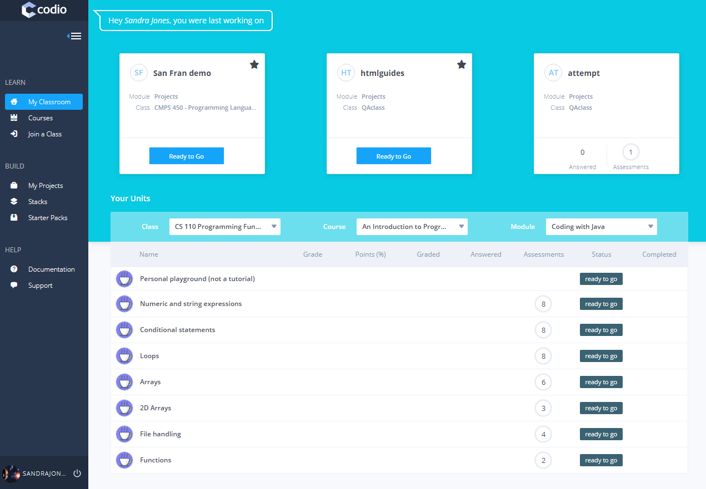
From the My Classroom screen you can view your classes, courses, projects and help by using the links on the left hand panel.
- LEARN links give your students access to classroom features and courses
- BUILD links give your students access to project tools and our professional IDE
- HOW TO links give your students access to our customer service team and our help documentation.
Joining a class
If your class is working with an LMS platform such as Canvas, Blackboard, Moodle etc. then you will access Codio directly from it.
If you are not using and LMS then your instructor should have given you one of the following ways of joining.
-
If your teacher has sent you an Invitation URL, copy/paste that into your browser.
-
If your teacher has sent you a 2 word token, go to Join Class button on our website and enter the class token. 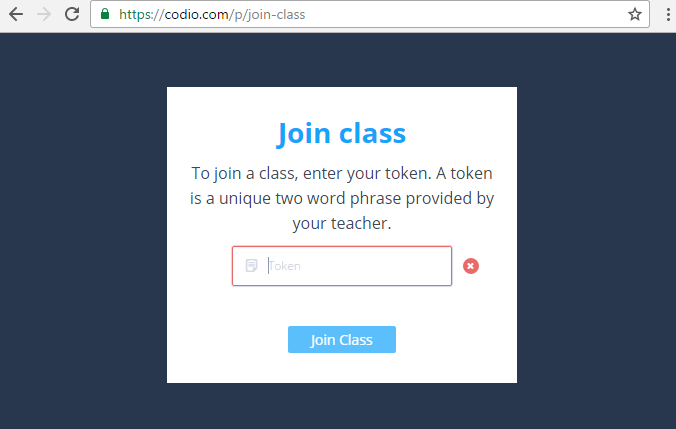
To access your class after this point, log in to your Codio account and go to the My Classroom area
My Classroom
The My Classroom area is where you can see the modules and units that have been assigned to you. Pinned units will be displayed more prominently at the top of the page.
Below is an example of a student’s My Classroom area:
Using the My Classroom area, you can easily re-open the unit you were last working on, or start/open any of the other units that have been assigned to you. You start or open units using the navigation buttons displayed.
Creating projects
You can create your own projects using the web-based IDE in Codio. To access the project area, use the BUILD links in the left-hand navigation panel.
To learn about how to create projects, jump to the main Creating Project section.
Dyslexia support
Codio has a built in dyslexia support feature. If you have students who would prefer to view their screen in dyslexia support mode they should do the following:
-
Open the unit they are working on.
-
From the menu at the top right of the screen, select the setting icon (the gear icon), then Theme, then select the Dyslexic option. 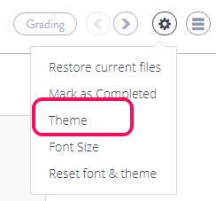
-
The screen should now display like this: 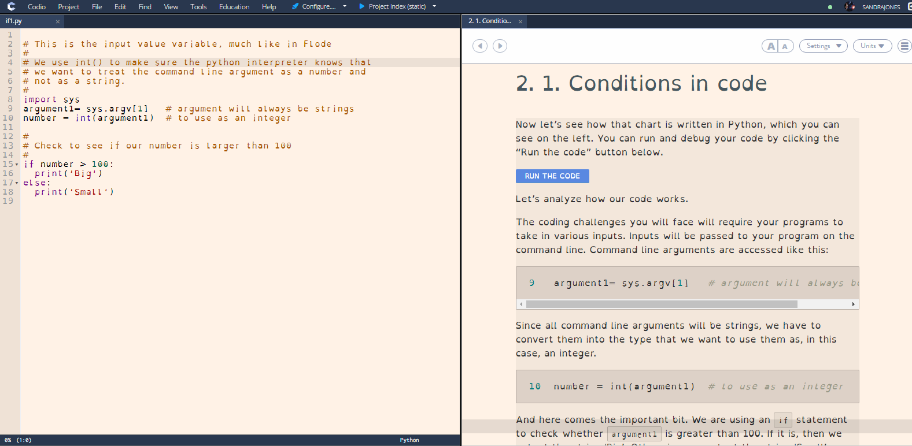
Forgotten passwords
If you have forgotten your password, you should use the lost password link on the log-in page to reset your password automatically via email. If you do not have access to the email address you used in creating your Codio account, contact your teachers who can reset the password for you.
If you wish to change your password (you should also do this if you forgot your password and/or it was reset by your teacher) follow these steps:
-
Click on your name and profile picture (bottom left of screen) 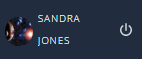
-
From the options along the top of the page, choose Account 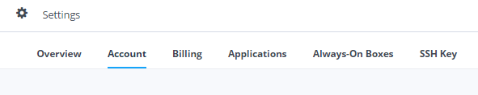
-
About halfway down the Account page is the Change Password area. The student should enter their new password, and then click Update password. 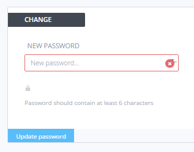
Play mode
To see your content running, you need to Play it. If the content does not automatically start or of you have closed it, go to Tools->Guide->Play menu option or click the Start Guide icon in the file tree:
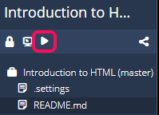
At this point the panel layout is set up automatically according to the layout specified in the first section and it will be displayed.
Player Options
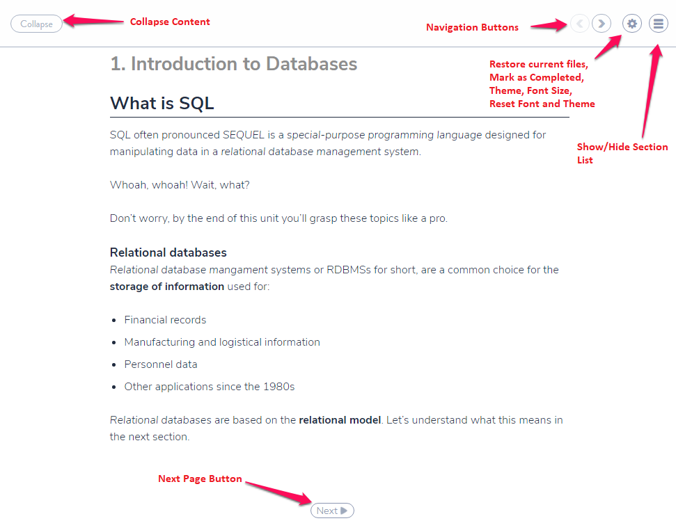
Within the player various options can be controlled by the user
- Navigation Buttons allows the user to navigate forward/backward in the content.
- Settings allows the user to change the Theme (light/dyslexic), Mark as Complete, change the font size, reset both the theme and fonts and to restore the current files (see below). See Dyslexia Support section
- Show/Hide Section List Hamburger Icon allows the user to show/hide the section list.
Restore Current Files
The Restore Current Files feature is a great way for students to reset/restore any files on that page to its initial state after hacking sample code around. Students can restore their files from the menu as shown below.
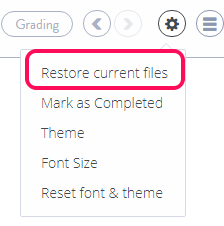
Guides
Restore Current Files
Sometimes you might make changes to your work that you don’t like or that you don’t want to keep.
The easiest way to get rid of these is to restore the original files in a unit. To do this:
- Open the unit you are working on. In the top right, choose the settings icon, and then Restore current files
Completing Units
When you have completed a unit you can mark it as completed. This can be done from either:
- Your My Classroom area
- In the settings (click the gear icon) 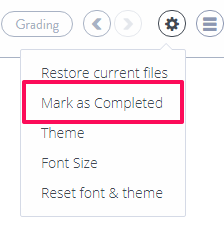
- From the last page in the guide.
- Going to Education>Mark as Completed menu item in the unit
If there are any assessments in the unit that have not been submitted, details of these will be shown to allow you to review them before completing the unit.
If you mark a unit as complete in error, discuss with your class instructor/teacher who can reset the unit so you can access it again
Lexikon
The Codio Lexikon is an integrated help system that lets you lookup information on a variety of languages and topics quickly and easily. Having access to concise reference information as new topics are learned is extremely useful and saves having to search the web and separate the wheat from the chaff!
You can access the Lexikon at any time from within a coding project or unit from the tools menu.
The Lexikon is organized into Topics. We currently have added
- Crunch
- CSS
- HTML
- Javascript
- Linux
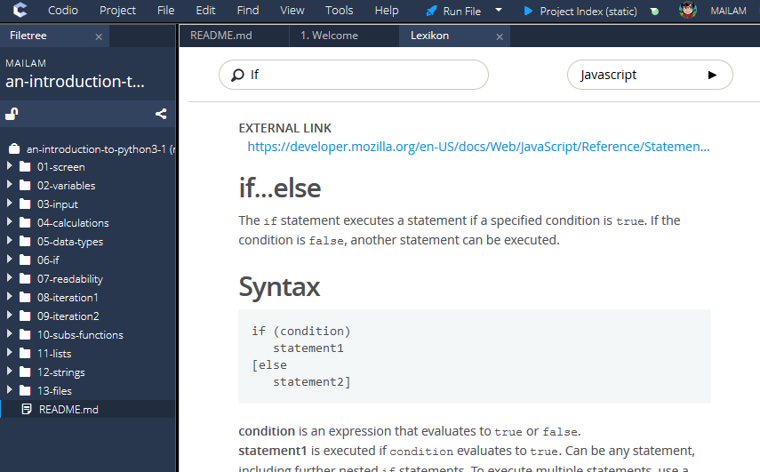
Grade Feedback
When your work has been graded and released by your class instructor, you will see 'graded' showing in your dashboard
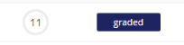
To view details of the grades given, either open the project and go to Education>Feedback
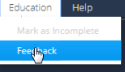
or click on the 'Grade' field showing in the dashboard
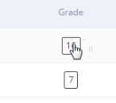
Click on 'details' for the assessment and you can drill down to see more information on that assessment
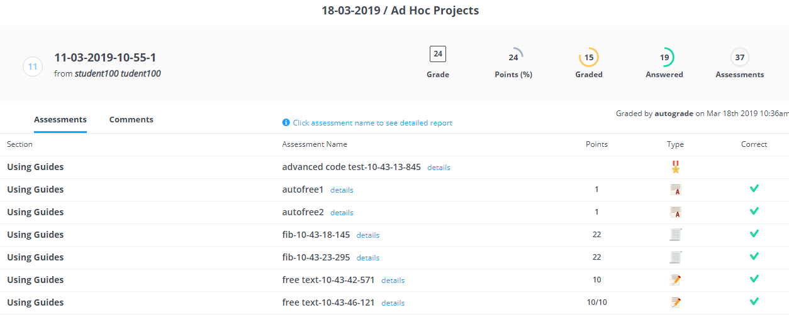
Note If the project has been marked as completed, you can click on the 'completed' button to access the grade feedback but if you wish to view the project, click on the name of the project on the left hand side. As the unit is completed you will not be able to edit anything but can view the content
If your organisation uses an LMS system a URL of the grading detail will also be passed to your LMS that you can access from the grading area.